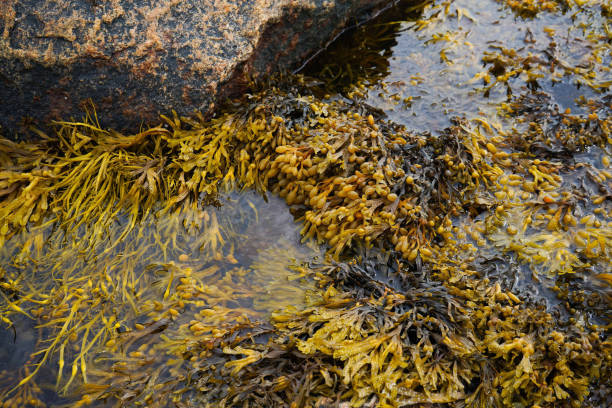
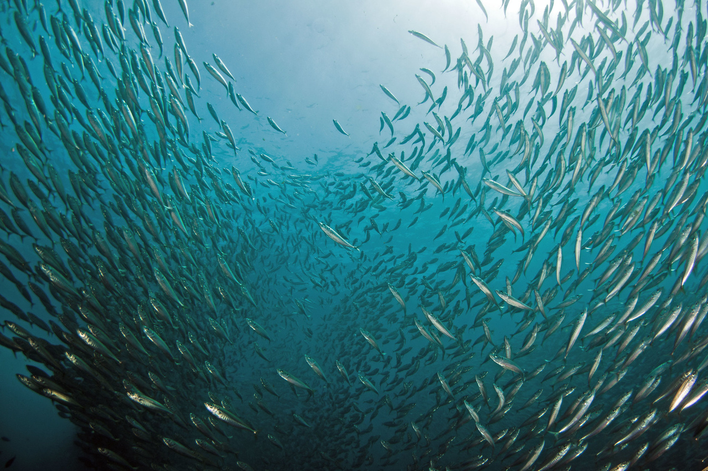
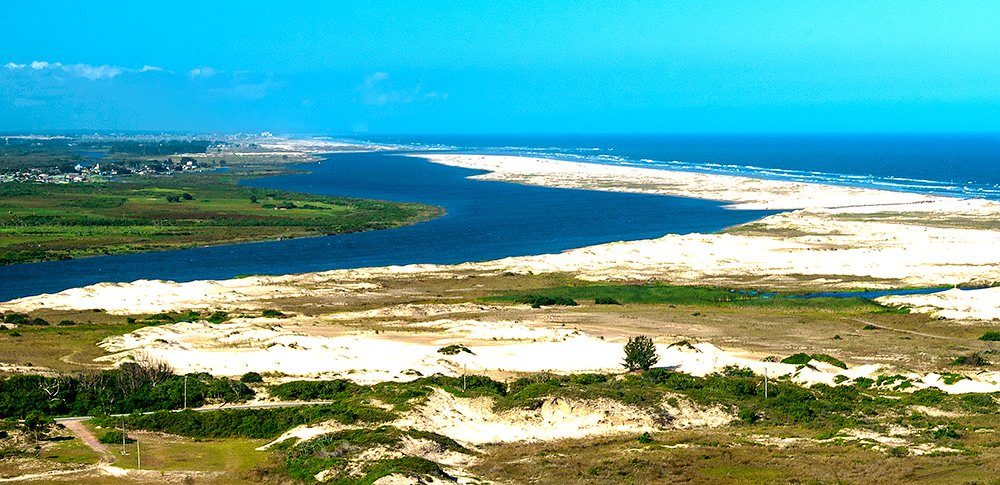
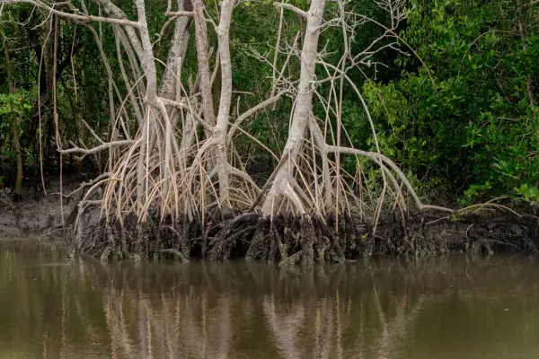
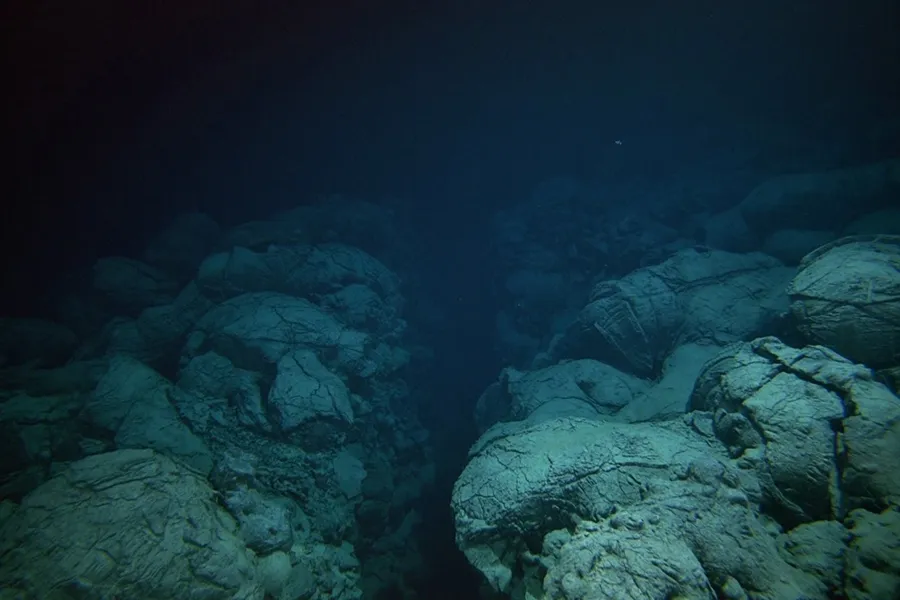

Ecossistemas Marinhos
Os ecossistemas marinhos são ambientes biológicos que se desenvolvem nos oceanos e mares,
e
incluem
uma vasta variedade de organismos e habitats.
Recifes de corais:
São formações biológicas complexas formadas principalmente por corais, que são animais marinhos pequenos que secretam cálcio, criando estruturas calcárias. Esses recifes são extremamente biodiversos, oferecendo habitat para uma grande variedade de peixes, moluscos, crustáceos e outros organismos.

Zonas intertidais:
São áreas que ficam expostas e submersas dependendo da maré. Elas incluem praias rochosas e arenosas, pântanos salgados e zonas lamacentas, e são lar de organismos adaptados às variações de temperatura e salinidade, como moluscos, crustáceos e aves marinhas.

Zonas pelágicas:
Refere-se ao ambiente de águas abertas e profundas do oceano, longe da costa. As zonas pelágicas são divididas em zonas superficiais e profundas e incluem organismos como peixes, baleias, tubarões, plâncton e várias outras formas de vida.

Estuários:
São áreas costeiras onde a água doce dos rios encontra a água salgada do mar, criando um ambiente de transição com salinidade variável. Estuários abrigam muitos organismos jovens, como peixes e moluscos, que dependem dessas águas nutritivas para crescer.

Manguezais:
São ecossistemas costeiros formados por árvores que se adaptam à vida em água salobra. Manguezais são importantes para a proteção das costas, prevenção de erosões e como criadouros para várias espécies marinhas.

Planícies abissais:
São as regiões mais profundas dos oceanos, localizadas abaixo de 4.000 metros de profundidade. Essas áreas são habitadas por organismos adaptados à falta de luz e pressão extrema, como certos tipos de peixes e invertebrados.

Esses ecossistemas são interdependentes, e qualquer alteração em um pode afetar toda a rede alimentar marinha. A preservação dos ecossistemas marinhos é essencial para garantir a saúde do planeta e o equilíbrio ambiental global.